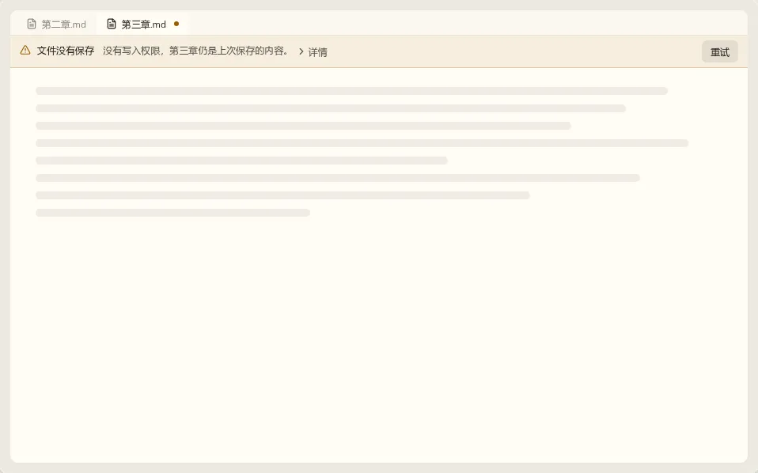
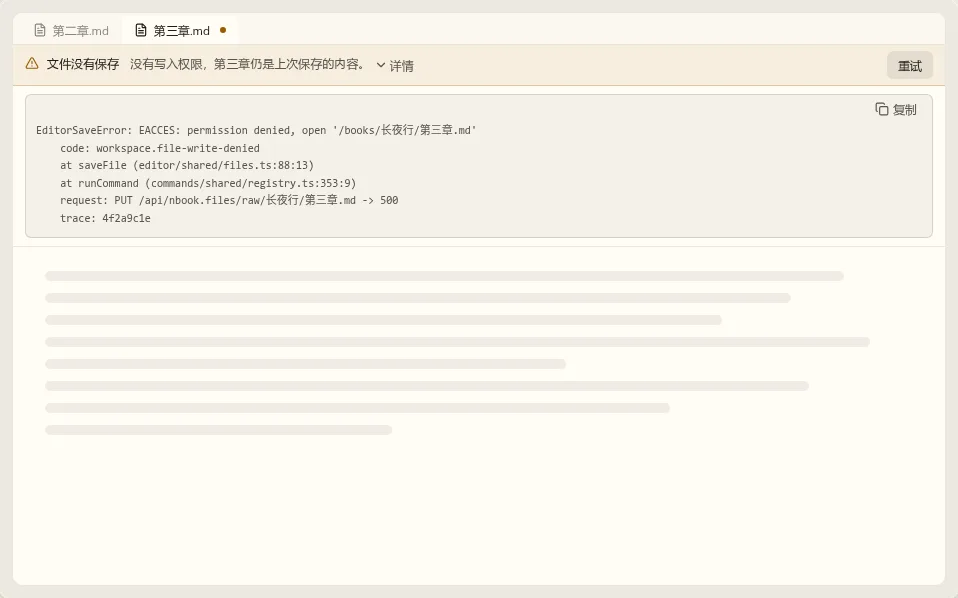
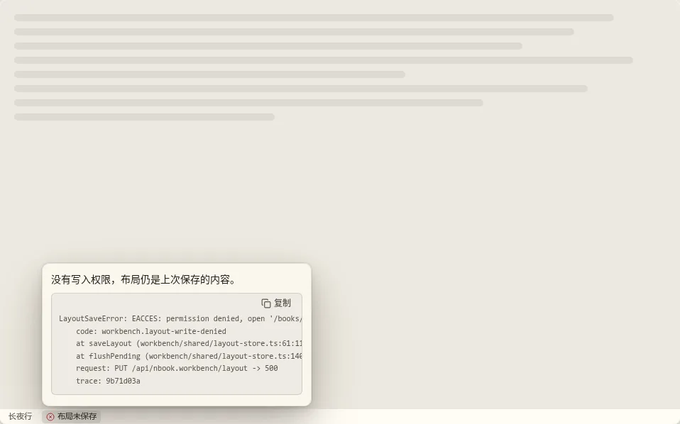
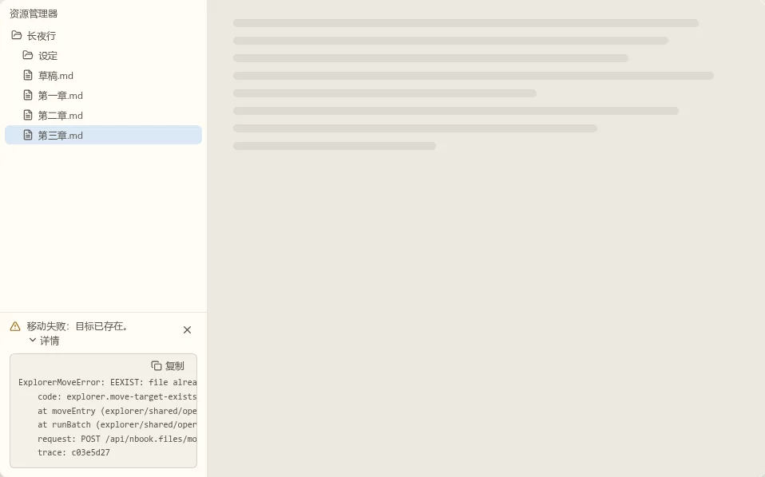
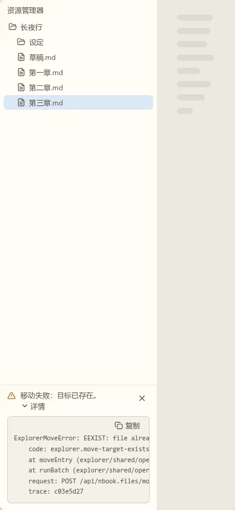

待定带详情的通知什么时候消失
现在的规则：警告级 4.2 秒后自动消失，而失败通知正是警告级。用户来不及展开，选中文字时鼠标一出通知计时还会恢复并把通知移走。


A 带详情的通知一律常驻，只能手动关闭或由发出方移除
规则最简单，选中和复制不会被打断；代价是失败通知多了会占屏，由第二题的上限兜住。
B 仍按色调限时，点开“详情”后转常驻
不展开的通知照旧消失；但用户没来得及点开就丢了诊断，诊断只剩日志里能找。
推荐 A。失败的详情是排查线索，丢了比占屏更糟。
目标：给界面一个统一放“开发诊断原文”的载体（ADR 0034：诊断原文只进详情、不当主文案）。下面的图都是 Component Lab 里用真实 nb-ui 组件搭的静态稿，亮色；窄屏与暗色另附。详情文字是英文诊断原文，不翻译；“详情”“复制”“已复制”这些界面文字走 nb-ui 自带目录。
现在的规则：警告级 4.2 秒后自动消失，而失败通知正是警告级。用户来不及展开，选中文字时鼠标一出通知计时还会恢复并把通知移走。
规则最简单，选中和复制不会被打断；代价是失败通知多了会占屏，由第二题的上限兜住。
不展开的通知照旧消失；但用户没来得及点开就丢了诊断，诊断只剩日志里能找。
推荐 A。失败的详情是排查线索，丢了比占屏更糟。
六条常驻的右下角视口，下一条会把更早的挤出屏幕上沿。对照两种做法：


折叠的通知计时照常（限时的仍会按时消失）；展开后列表在视口内滚动，不超过窗口高度。
实现最省；但最早的失败藏在滚动区外，和被挤出屏幕效果相近。
推荐 A，上限取 4。
上面两张图里，详情块只和文字列一样宽，比通知窄约 70px（右边是动作和关闭两列），原文因此被裁得更多。
Notification 新增横跨整行的 footer 插槽，详情块放那里，与通知同宽要改 nb-ui 组件与同名 .md；原文每行多出约 70px 可见宽度。
不动 nb-ui；原文靠横向滚动看，窄屏更挤。
推荐 A。
同一个详情组件（触发器加原文块加复制），按位置不同的摆法：





资源管理器行内改名的单行错误、表单字段的状态行：放不下，也不该放，原文只进诊断日志。失败页（FailurePage）和 Agent 对话视图已有自己的详情位（失败页的 reason 段、工具详情块），这次不动，等 w00031 t03 迁移时再接同一个组件。
推荐照此确认。


Notification 根节点的 select-none 不改，详情块自己 select-text，已验证三击能选中、标题仍选不中。--bg-subtle（在有色调的通知底上突兀）；对比够用。


NotificationInput 新增 detail?: string，不是 Text。标题与正文改成到渲染时才翻译这件事 t03 已做完，不再属于本 Task。NotificationItem 要加 detail，NotificationStack 要加上限与折叠小条；Popover 打开时自动聚焦第一个可聚焦元素（这里是“复制”），没有关闭自动聚焦的参数，要给它加或在内容里放一个接住焦点的容器；Button 最小是 28px 档，11px 的原文旁偏大，要么加 xs 档要么接受 28px；CodeBlock（最大高度固定 280px、没有复制）和 Collapsible（触发器与内容必须相邻）不能直接用，详情块是新组件；::selection 样式，是否统一定一个，留到实现时顺手定。